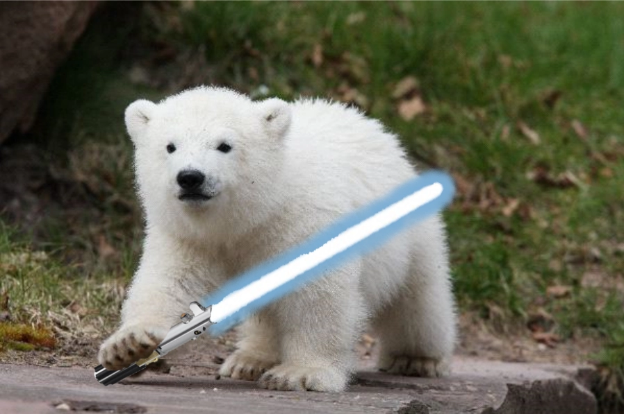
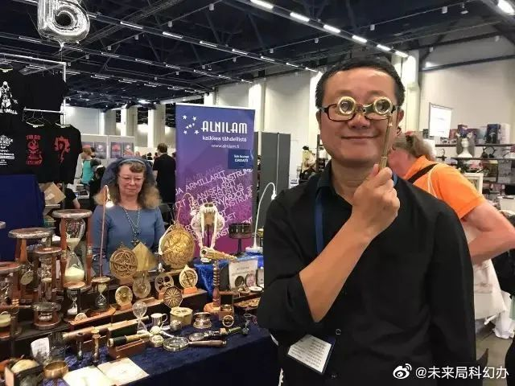
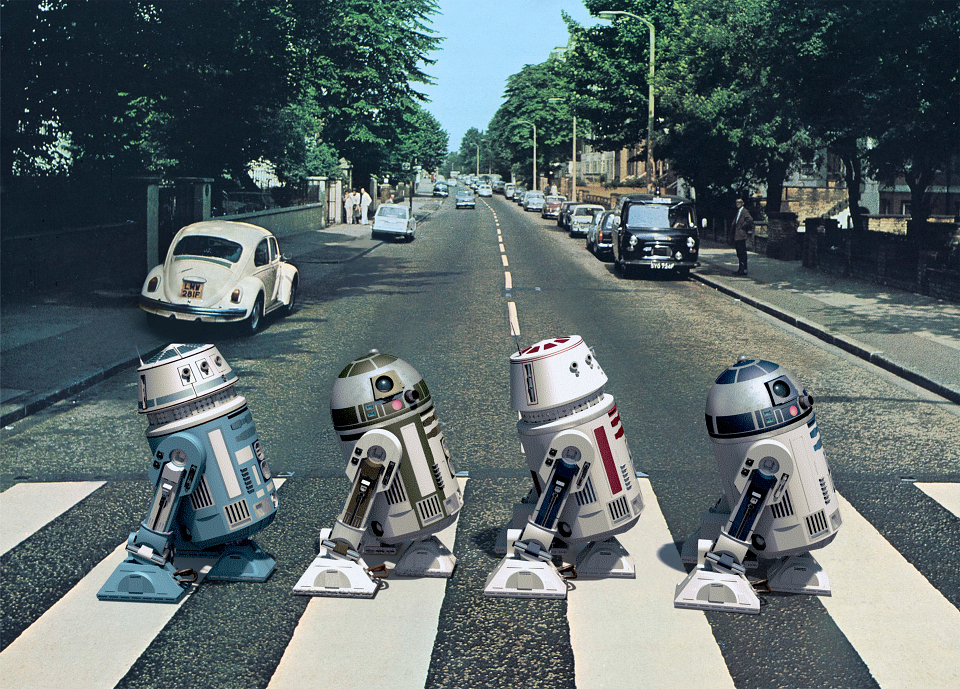
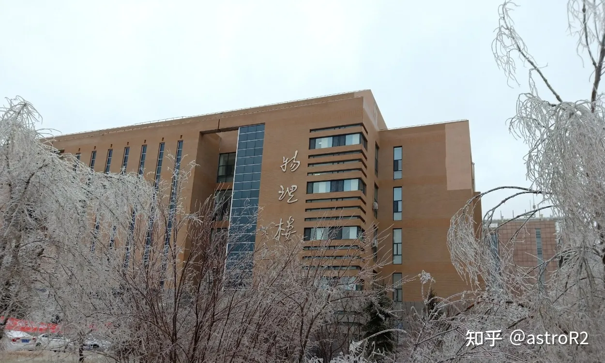
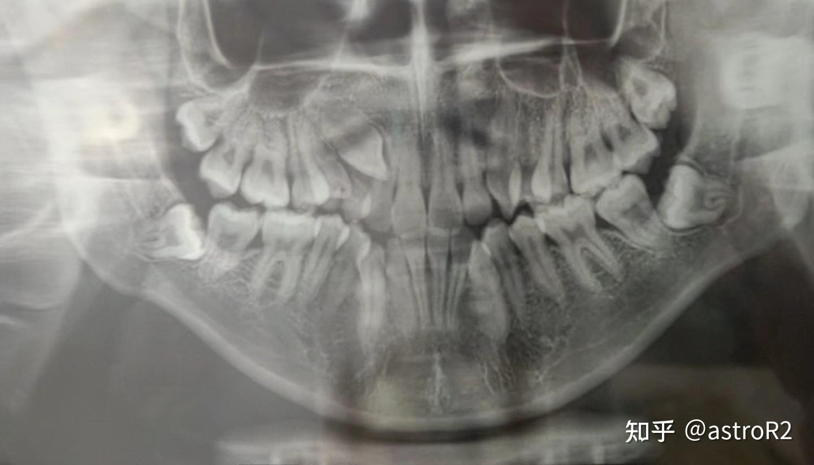

More
Something maybe useful or interesting?
Useful resources
- CCG-FAST links: a collection of links about multiband surveys and the fundamentals of radio astronomy, especially useful for H I research.
- Radio astronomy collections: Chinese-language resources covering single-dish and interferometric observations, unofficial HiFAST documentation, and useful radio astronomy software such as CASA tutorials.
- Research notes and tutorials: Chinese-language notes and tutorials on GADGET-4, Cloudy, MARTINI, Linux, Python, and other tools.
My public code
- hiviewer: a tool for checking and displaying the contents of FITS files.
- obshelper: a package for planning H I spectral-line observations.
About me

My name is written as 徐晨. In China, Xu is my family name and Chen is my first name, so you can call me Xu Chen, or just Chen. The reason why I was named this, is that my father's family name is Xu(徐) and my mother's family name is Chen(陈). That's simple, right?
I was born in the final year of the 20th century. I live in a small city, which is located at 119deg 35' 18" E, 39° 55'54"N. Where I live for more than twenty years is extremely near the sea, or the Pacific Ocean, on the top of this page. Watching Orion rising above a vast expanse of sea, wow, is beyond my words.
Some questions？
Here are some questions that people often ask me, and my answers. Most of them are from Zhihu, a Chinese Q&A website. You can click the links to see my full answers in Chinese.Why do you want to learn astronomy?
Good question! Here is my full answer:
你为什么选择天文学？ - 知乎
Short answer: This man!

Do you like Star Wars?
Of course, I’m a Star Wars fan!!!
星战粉都是怎么迷上《星球大战》的？ - 知乎
You can see my ID is astro Artoo!!!

You studied physics first?
Yeah, in this answer, I wrote the experience of four-year at JLU: 在吉林大学就读是怎样一番体验？ - 知乎

How’re your teeth going?
See this collection:
My orthodontic experiences —
医学流水账 - 收藏夹 - 知乎
I have plenty of experience as a dental patient, and I volunteer at NAOC to advise my fellow students on oral health.

Other hobbies?
Sci-fic, detective movies, poor football…..
Yeah, this 憨憨 is me.
Let me think of anything else…